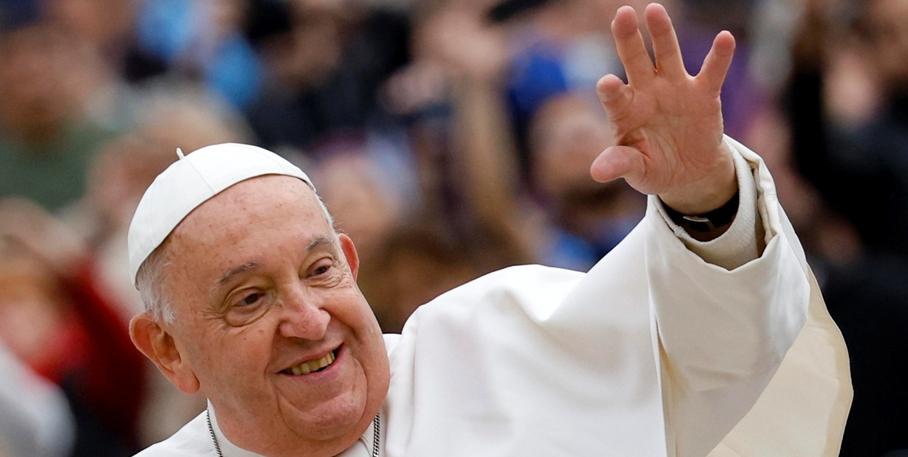
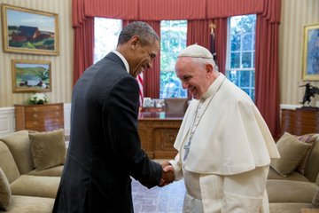

Murió el papa Francisco: el adiós al argentino que transformó la Iglesia Católica
- Jorge Bergoglio falleció a los 88 años a causa de un ACV que le provocó un fallo cardíaco.
- Su papado transformó a la Iglesia Católica, con una prédica de austeridad y apertura.
- Todas las repercusiones en el mundo, minuto a minuto, y cómo serán sus funerales.
El papa Francisco murió este lunes a las 7.35 hora italiana en su residencia de la Casa Santa Marta. Así lo anunció esta mañana el camarlengo, cardenal Kevin Joseph Farrel. "El obispo de Roma ha vuelto a la casa del padre, su vida entera ha estado dedicada servicio del Señor y de su Iglesia", dijo. Horas más tarde se confirmó que el Pontífice argentino sufrió un ACV que le provocó un fallo cardíaco irreversible. Todas las instancias de una jornada histórica en la cobertura minuto a minuto de Clarín.

El papa Francisco murió este lunes a las 7.35 hora italiana en su residencia de la Casa Santa Marta. Así lo anunció esta mañana el camarlengo, cardenal Kevin Joseph Farrel. "El obispo de Roma ha vuelto a la casa del padre, su vida entera ha estado dedicada servicio del Señor y de su Iglesia", dijo. Horas más tarde se confirmó que el Pontífice argentino sufrió un ACV que le provocó un fallo cardíaco irreversible. Todas las instancias de una jornada histórica en la cobertura minuto a minuto de Clarín.

Barack Obama, sobre el papa Francisco: "Fue un líder excepcional" El ex presidente de Estados Unidos sostuvo en redes sociales: "Con su humildad y sus gestos, sencillos y profundos a la vez —abrazar a los enfermos, atender a los sin techo, lavar los pies a los jóvenes presos—, nos sacó de nuestra complacencia y nos recordó que todos tenemos obligaciones morales con Dios y con los demás". Y agregó: "Hoy, Michelle y yo lloramos junto con todos los que en el mundo, católicos y no católicos, se sintieron fortalecidos e inspirados por el ejemplo del Papa. Que sigamos escuchando su llamado a no permanecer nunca al margen de esta marcha de esperanza viva".
